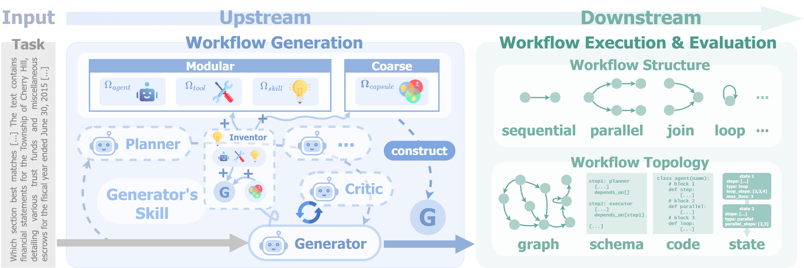
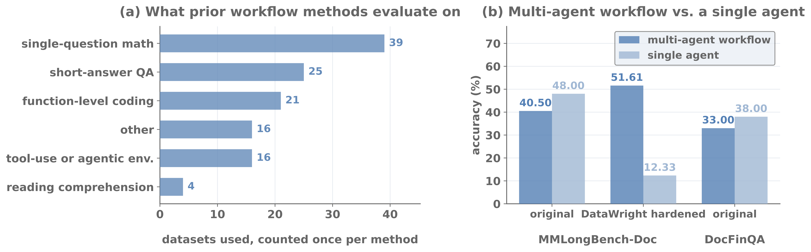
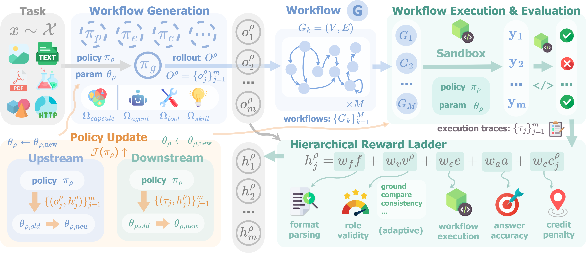
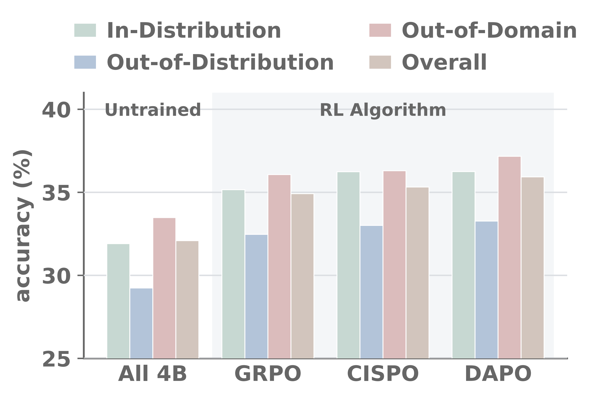
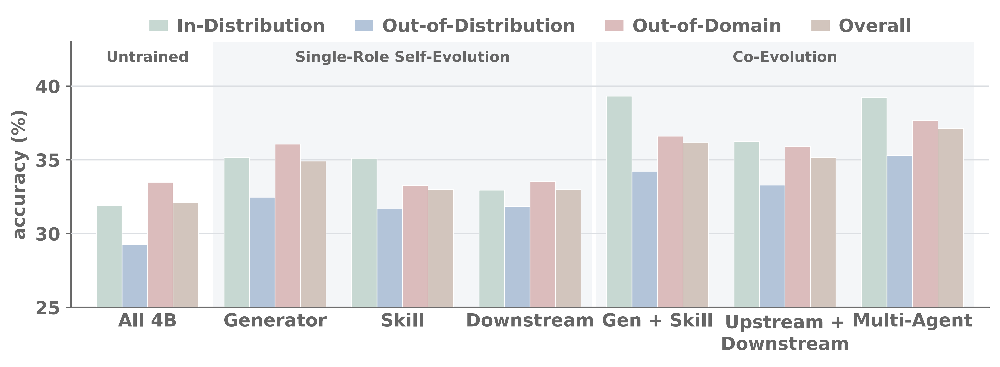

1William & Mary 2NEC Corporation of America 3University of Illinois Urbana-Champaign *Equal co-mentorship
Tackling complex real-world tasks can exceed the capabilities of a single large language model (LLM), motivating the use of multi-agent workflows that coordinate specialized agents to work together on these tasks. Recent methods train LLMs to construct better workflows from execution outcomes, but they optimize only the workflow generator, while the other agents that build or execute each workflow remain fixed even though every outcome depends on all of them. However, extending training beyond the generator is challenging: the agents are coupled, and a workflow's outcome is a single sparse score that cannot tell which agent causes a failure. We propose FloWright, which leverages the workflow as a harness to optimize workflows. By introducing a hierarchical, structure-aware reward paradigm, FloWright enables one role to self-evolve and two or more roles to co-evolve, with no additional models, labels, or executions. Considering the limitation that workflows are commonly trained and evaluated on data that a single agent can already handle, we further propose DataWright, an adaptive data hardening approach that converts existing datasets into workflow-level tasks with increased difficulty. Across document, slide, chart, code, math, and finance tasks, small open models trained with FloWright achieve improved performance by up to ↑7.41%, with co-evolving (↑5.03%) more roles gaining more than optimizing one of them alone (↑2.83%).

Recent work trains LLMs to construct better workflows from the outcomes of executing them. Yet these methods typically optimize a single workflow generator. Because the outcome of a workflow depends jointly on every agent that builds or executes it, training only the generator leaves the other agents shaping every outcome without ever learning from it.
The agents that execute a workflow, and any others that help build it, remain fixed, which limits how much the workflow as a whole can improve.
One agent's output becomes another's input. Training agents separately ignores how each agent's behavior shapes what the others learn.
A single score for the whole workflow cannot tell which agent causes a failure, and existing attribution adds costly models, labels, or executions.
| Dataset | Multi-agent workflow (%) | Single agent (%) | Δ (%) |
|---|---|---|---|
| MMLongBench-Doc (original) | 40.50 | 48.00 | ↓7.50 |
| DocFinQA (original) | 33.00 | 38.00 | ↓5.00 |
| MMLongBench-Doc (DataWright-hardened) | 51.61 | 12.33 | ↑39.28 |

A complex task x is solved by a workflow, a directed graph G = (V, E) whose nodes are agents, tools, or skills, and whose edges carry the data and control flow among them. Upstream, the Generator πg produces G. Downstream, the harness H executes and grades it:
x →πg G →H (y, h(G, x)), h(G, x) ∈ [0, 1]The signal h serves three purposes: the evaluation metric, the training signal, and the test-time objective.

The harness does not reduce an execution to a single pass-or-fail outcome. It stages the signal into a ladder of auto-verified terms, so the policy sees a meaningful gradient even when the workflow falls short. Every optimizable role ρ instantiates its own reward from the same shared harness:
hρ = wf f + wv vρ + we e + wa a + wc cρWhether the role's own output parses. An output that cannot be read leaves nothing to execute.
Whether the role's contribution is valid, such as a workflow that is a well-formed graph over the pool. Deterministic, never a learned judge.
Whether the workflow executes to a final answer.
How correct that answer is, shared by every role.
The fraction of the role's own nodes that root-cause a failure, read from the execution trace the harness already records.
cρ = − |Fρ| / |Vρ| ∈ [−1, 0]Upstream construction turns on three choices: the topology of the workflow, and the granularity and dynamics of the pool it draws from. A single workflow can express sequential, parallel, branching, and iterative structure as the task demands.
The four topologies differ only in where the control flow is written down. Each is converted into the same directed graph, so execution, credit, and evaluation never observe which topology produced it.
Steps declare their dependencies, and one control_flow block states the control flow.
{"steps": [{"step_id": "step_1", "agent": "Visual Analyst",
"instruction": "Analyze the images for Question 1 [...] return only the letter",
"inputs": {"image_1.jpg": [...]}, "outputs": ["Answer_Q1"], "depends_on": []},
[...]],
"control_flow": {"type": "sequential", "loop_steps": [], "max_iterations": null}}Agents, tools, and skills stay separate units, enabling flexible selection and composition.
Ω = Ωagent ∪ Ωtool ∪ ΩskillEach agent is bundled with the tools and skills it needs into a self-contained capsule.
Ω = ΩcapsuleWhen a task calls for a capability the pool does not contain, the Generator's Inventor skill expands the pool with the missing tool, skill, or agent. A grown pool also carries components distilled from past experiences.
The reward paradigm serves every role from one shared harness, enabling one role to self-evolve or several to co-evolve. When several roles train inside one harness, each role's behavior shapes what the others encounter: the coupling is a mutual curriculum.
One role optimizes its role-specific reward inside the harness as it runs, so it evolves in the same flow that will use it.
An agent co-evolves with its own skill, such as the Generator with its Inventor skill.
An upstream agent that builds the workflow is coupled with a downstream agent that executes it.
Any two or more agents co-train, each learning against the latest evolved policies of the others.
A role's policy is optimized to maximize its expected signal over tasks. FloWright contributes a training paradigm rather than an optimizer, so GRPO, DAPO, and CISPO all instantiate it.
J(πρ) = E [ hρ(G, x) ]With no weights changing, the harness distills a reusable prior, internally from its own experiences or externally from a stronger teacher, and distills successful experiences into few-shot cases.
P* = arg maxP E [ h(G, x | P) ]Datasets that a single agent can already handle can neither reveal nor optimize what a workflow adds beyond it. DataWright converts existing datasets into workflow-level tasks by rule, with no model in the loop. Hardening changes how hard a task is, not how its answers are graded: every sub-question keeps the metric of its own answer type, and a task's score is the mean over its sub-questions.
Bundles ℓ questions about the same input into one task, which splits into sub-questions that can be assigned and answered separately.
Bundles ℓ questions, each with its own distinct input, into one task. Each sub-question is matched to the input that answers it.
Keeps one question and places its input among ℓ − 1 decoy inputs drawn from the same dataset.
We train Qwen3.5-4B and Qwen3.5-9B on the paired strategy at ℓ = 3 of four datasets, and evaluate on held-out test sets across in-distribution, out-of-distribution, and out-of-domain arms.
Mean accuracy (%) over the hardening strategies and levels each dataset supports. 4B and 9B abbreviate Qwen3.5-4B and Qwen3.5-9B, and (a) to (d) denote the four evolution modes.
| Method | In-Dist. | Out-of-Distribution | Out-of-Domain | Overall | ||||
|---|---|---|---|---|---|---|---|---|
| ℓ=3 | ℓ=3 | ℓ=5 | Mean | ℓ=3 | ℓ=5 | Mean | ||
| Baseline: Single Agent (without tool or skill) | ||||||||
| Qwen3.5-4B | 10.87 | 11.39 | 6.12 | 8.15 | 7.89 | 5.12 | 6.56 | 7.42 |
| Qwen3.5-9B | 16.17 | 14.45 | 9.35 | 11.31 | 13.55 | 9.53 | 11.61 | 11.94 |
| Baseline: Single Agent (with tools and skills) | ||||||||
| Qwen3.5-4B | 21.13 | 20.75 | 15.12 | 17.28 | 25.02 | 19.35 | 22.29 | 20.70 |
| Qwen3.5-9B | 28.53 | 31.14 | 23.87 | 26.67 | 35.79 | 30.08 | 33.04 | 30.75 |
| Baseline: FloWright (untrained) | ||||||||
| Qwen3.5-4B | 31.91 | 34.91 | 25.70 | 29.24 | 36.17 | 30.58 | 33.48 | 32.09 |
| Qwen3.5-9B | 50.14 | 44.47 | 40.48 | 42.02 | 52.44 | 46.84 | 49.74 | 47.50 |
| FloWright: Train-Time Optimization | ||||||||
| + (a) 4B | 35.16 | 37.78 | 29.15 | 32.47 | 38.38 | 33.58 | 36.07 | 34.92 |
| + (a) 9B | 54.51 | 48.28 | 43.66 | 45.44 | 56.99 | 50.36 | 53.80 | 51.39 |
| + (b) 4B | 39.32 | 39.50 | 30.94 | 34.23 | 39.27 | 33.74 | 36.61 | 36.15 |
| + (c) 4B | 36.23 | 38.75 | 29.88 | 33.29 | 38.89 | 32.65 | 35.89 | 35.15 |
| + (d) 4B | 39.23 | 40.71 | 31.91 | 35.29 | 40.48 | 34.67 | 37.68 | 37.12 |
The gains hold across RL algorithms, reward terms, workflow topologies, pool granularities, and pool dynamics.
Optimizing the Generator outperforms the untrained baseline under every algorithm: ↑2.83% for GRPO, ↑3.23% for CISPO, and ↑3.84% for DAPO overall.
DAPO leads in every regime, and its margin widens out-of-domain.

What FloWright optimizes transfers across roles and to backbones it never trains alongside, at both train and test time.
Alone, the Generator gains ↑2.83%, the Inventor skill ↑0.90%, and the downstream agent ↑0.88%.
Co-evolution gains more: ↑4.06% for Generator and skill, ↑3.06% for upstream and downstream, and ↑5.03% for multi-agent.

@article{guo2026flowright,
title = {FloWright: It Takes Workflows to Evolve Better Workflows},
author = {Guo, Xuehang and Wang, Haoyu and Chen, Haifeng and Chen, Yangyi and Wang, Zhenhailong and Wang, Qingyun},
journal = {arXiv preprint arXiv:2610.01026},
url = {https://arxiv.org/abs/2610.01026},
year = {2026}
}